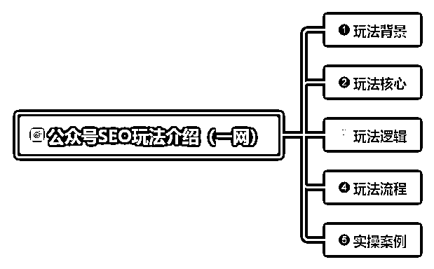
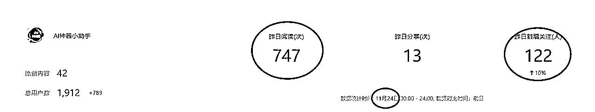
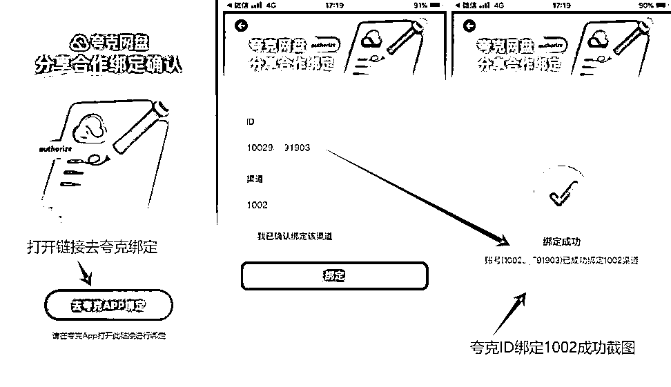
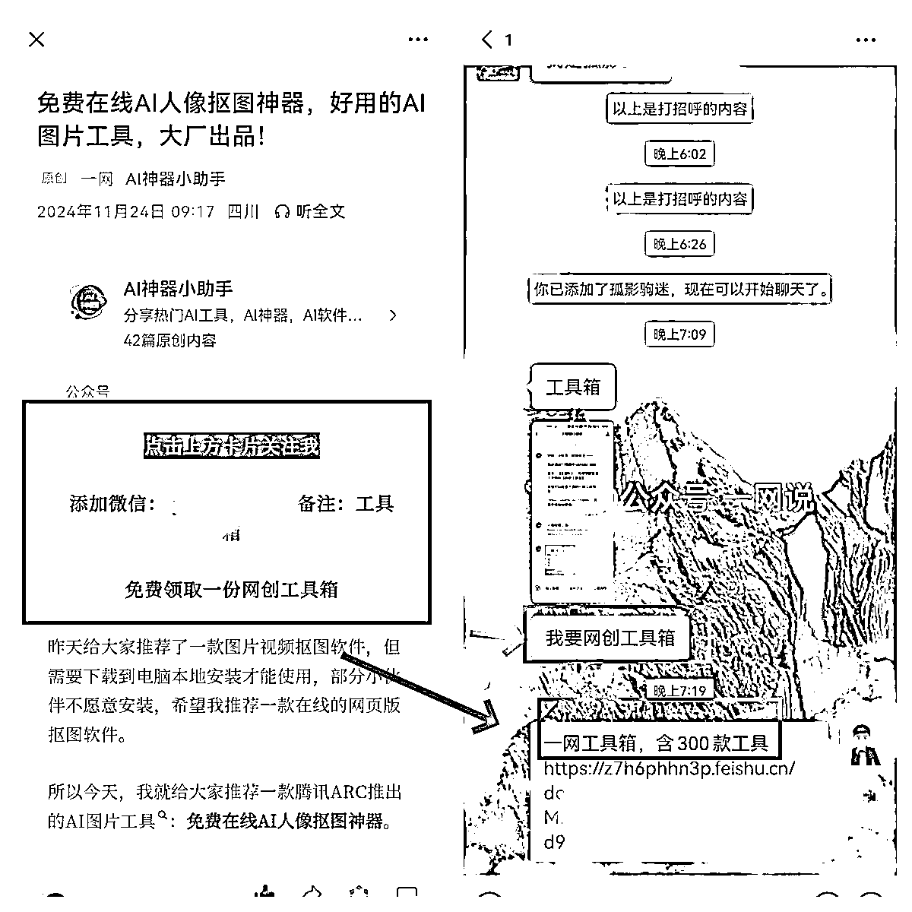

来源：https://z7h6phhn3p.feishu.cn/docx/PiVydqWoDotcSPx7daEcLxFlnne
我是一网，今年是生财第四年，最懂网盘拉新的男人，专注网盘拉新、虚拟资料和私域流量增长与变现。
今天大家分享的主题是网盘拉新的公众号SEO玩法，借助AI工具进行洗稿。
这个玩法我选择了软件赛道细分的领域：创业博主软件领域，测试了一个月，每天涨粉100+，全是精准的搜索创业粉。
该玩法适合网盘拉新，也适合引流私域。
为了方便大家理解，我做一个思维导图。

我们的任何玩法，都是为了获取流量。
所以在任何平台做流量，一定要了解平台的流量渠道。
任何平台的流量基本上分两种：推荐流量（也叫分发流量）和搜索流量。
公众号也不例外，但推荐流量比较依赖平台的标签。
如果平台给你的账号标签不够精准，推荐的流量也不精准，但这种流量往往比较大。
推荐流量，有不确定性，你往往不知道哪个文章会被推荐，很多时候靠怼量+运气。
大家应该都知道公众号爆文项目，前段时间和最近一段时间都比较火。
公众号爆文项目获取的主要是公众号的推荐流量。
搜索流量是用户自发搜索，这种流量往往比较精准，但这种流量往往比较少。
搜索流量是确定性的，只要你的某个关键词排到前面，你的文章就可能被搜索用户看到。
一般来说，这种搜索流量的高低取决于下面几个因素：
（1）用户每天在微信搜一搜上搜索该关键词的搜索次数；
（2）有排名的关键词数量；
（3）关键词的排名高低。
铺的关键词数量越多，有排名的关键词越多，每个关键词的排名越高，获取的搜索流量往往越多，这种，我们也称之为SEO。
因为搜索流量，精准且确定，所以对我们大多数人更合适，尤其是新手。
所以我们以微信搜索流量为突破口，诞生了下面的玩法：公众号SEO玩法
玩法介绍视频版：
借助AI工具，快速进行大量文章的编写，铺垫赛道的大量关键词（长尾关键词），通过SEO进行曝光，最后网盘拉新或者引流私域进行多重变现。
核心：AI工具、快速写文章、铺设大量关键词
玩法逻辑有两个:
第一个：确定赛道>找关键词>公众号找同行文章>AI工具根据关键词和同行链接写文章>简单修改文章>发文章>领资源>用户打开网盘转存资料>完成
备注：这个逻辑就是用户在公众号发送关键词，获得资源链接，自己转存！
第二个：确定赛道>找关键词>公众号找同行文章>AI工具根据关键词和同行链接写文章>简单修改文章>发文章>领资源>用户加你微信>发用户网盘链接>用户打开网盘转存资料>完成
备注：这个逻辑就是用户在公众号发送关键词，获取联系方式，添加你来获取资源
如果不明白的话，可以看第7节的引流思路
公众号SEO玩法，是指通过写公众号文章，在文章中部署相关的关键词（热门词+长尾词），当文章被微信系统收录后，用户在微信搜一搜中搜索相关的关键词（热门词+长尾词）就能找到我们。
公众号玩法流程三步走：
1.确定关键词
关键词，根据网盘拉新的赛道来选择！
比如，软件赛道:视频去水印软件、视频去字幕软件、视频配音软件、视频格式转换软件、视频视频下载软件、视频去重软件等等都是常见关键词。
比如，学习赛道：
按阶段分：学前资料、小学资料、初中资料、高中资料.....
按年级分：一年级学习资料、二年级学习资料、三年学习资料、四年级学习资料、五年级学习资料......
按学科分：小学语文资料、小学数学资料、小学英语资料......
备注：确定关键词，就是确定赛道
2.根据关键词写文章
一提到写文章，可能有很多新圈友，比较害怕，因为很多人都擅长写文章，我其实也不擅长写文章。
所以我们写文章的核心是：模仿，像素级模仿！
同时为了解决大家的顾虑，我们引入AI工具，简单的说：我们用AI工具帮我们写。
我们只需要找到对标文章，确定文章要写的词，然后按照我们提供的方法，直接丢给AI工具就行。
3.文章布局关键词
写出来的文章，根据我们的教程，做好文章的标题布局，文章的内容关键词布局。
4.发布文章
做好文章排版、文章钩子的部署，就可以发布文章了。
为了方便大家理解，后面我用实战的软件赛道做举例，如果圈友做其他赛道的话，思路类似！
我从10月份开始做的几个账号，这个账号的内容相对正规，可以公开作为演示站。

我是以引流私域为主，用户关注公众号后发送关键词，就得到微信二维码的引导，部分人不愿意添加，就会取消关注。
如果以以网盘拉新为主，用户关注公众号后发送关键词，就会得到网盘链接。
这样的话，大部分用户应该不会取消，账号的涨粉会多一些！
全程用AI协助写文章，提前找好对标对象，一篇文章10-20分钟搞定。
开始每天自然涨粉10-20人，后面每天涨粉100+，大部分都是自然搜索流量。
看一下公众号最近几天的阅读和涨粉情况：
11月27日：
11月26日
11月25日

11月24日

11月23日
11月21日
11月20日

11月19日
11月18日
大家可能觉得这个流量不是很大。
请注意：这些都是精准搜索用户，可能一个用户的价值比那些公众号爆文的推荐流量带来的100个泛用户的价值还高！
先看一下流量的增长趋势
流量来源占比，搜索流量占到50%以上。
再看搜一搜的增长数据，每天来自搜索流量的阅读量500-600。
发布的文章都有搜索流量，而且关键词排名还可以。
除了涨粉，其实引流私域的效果还不错，比如涨粉1000多，我引流私域400多人。
我使用了一个新微信号，号上原来有20多人，相当是引流私域400人+。

我这里只是为了测试玩法的可行性，文章更新较少，只保持每天更新。
因为这些粉丝都是精准用户，所以同样粉丝量，搜索类的粉丝价值更高。
而且，我们的文章都是用AI工具写，不需要消耗大量时间。
搜索流量是确定的，只是需要不断的铺垫关键词文章，大量铺垫关键词后，剩下的交给时间。
实操案例视频：
1、注册拉新渠道
直接点击下面的地址、然后注册、登录、完成实名
拉新渠道地址：直接点击网盘渠道
https://dt.bd.cn/#/pages/zt/pc/index?path=pages%2Flogin%2Fregister&invite_code=678678
2、点击完善信息，如图填写。
注意：渠道类型不能选“任务量”或者“地推”，否则首页没有网盘拉新项目。
一网对信息完善表填写建议：
做单城市：建议写自己所在城市，如果确实找不到自己的城市，选择省会城市也可以。
用户群体：按实际情况填，如果不知道填啥，就填公域。
擅长项目：填注册拉新。
对用户把控：选一般（可做次留）。
渠道类型，可以根据自己的实际情况添加，如果非要建议，就填社群。
团队人数选个人，日做单50-200之间，比如随便选择一个整数50,60,70,80......200。
第一步：绑定服务商！
用夸克/浏览器打开下方链接获取夸克UID/ID，并绑定服务商（1002）截图备用；
https://b.quark.cn/apps/c3qMkYerj/routes/J1bMu5GVq?uc_param_str=dsdnfrpfbivesscpgimibtbmnijblauputogpintnwktprchmt&uc_biz_str=S%3Acustom%7CC%3Atitlebar_hover_2

第二步.在夸克网盘新建文件夹，随意转存一些资源，然后把分享链接提取出来，后面申请推广码需要用到。
步骤如下：
1.打开夸克，点击“云文件”
2.找到保存的分享文件或文件夹，长按选择”分享”，选择公开链接即可
第三步：填写报备信息；
第四步：等待审核，审核通过即可推广
一般一个工作日，会有短信通知！
a.点击下方任推邦专属【迅雷联盟链接】进行绑定，一定要点击立即接受
（如下图所示即可，不绑定无法通过审核）
迅雷联盟链接在此点击：https://sl-m-ssl.xunlei.com/entry/cps?union_id=Union_202210249&uid=498096066

b.登录迅雷APP，查看【迅雷注册手机号】和【迅雷数字账号】，申请推广时需要填写
c.在迅雷网盘文件夹存放好文件资源后，不可空文件夹，长按文件夹点击【分享】，开启允许快速访问，并复制文件链接。
申请推广时需填写此文件链接。
如果选择口令推广方式，口令词将和此文件夹链接绑定。
建议我们申请的时候，直接申请
d.点击任推邦下方申请推广码→填写推广信息→选择推广方式链接或口令（建议链接,因为我们主要在公众号推广用不上口令）→等待审核通过
e.等待审核，审核通过后，此迅雷账号已正式开通推广权限，可以开始推广获得收益。
1.用微信或下载登录百度网盘扫描下方二维码或点链接：https://snsyun.baidu.com/sl/j6fEY
进行渠道关系绑定（如扫码出现无法参与/绑定失败、则需换其他网盘账号扫码绑定。）
2.复制UK码+绑定成功截图，在【申请推广码】处填写报备信息，审核通过后即可推广。
3.在【申请推广码】处填写报备信息，次日工作时间审核。
4.通过审核后，就可以进行推广了。
第一步：绑定渠道
1.点击下方链接用UC浏览器打开，绑定服务商（渠道号为UC_KOL_1002）：
非常重要，绑定成功才能归因数据！(绑定后不可解绑，解绑无法出数据，同时该UID无法再次绑定。)
https://qr06.cn/CKYFdm
第二步申请推广码
【申请推广码】,填写相关信息，审核通过后即获得推广权限，可在UC网盘获取分享链接进行推广。
此处需同步上传UC网盘id绑定成功截图，
绑定成功截图示例如下：
为了方便后续资源分享，我们可以创建自己的资源群，然后把你想分享的资源都上传到上面。
比如一网自己做软件赛道，自己也做了对应的资源网盘群。
你们可以直接转存我的，然后上传到自己的网盘即可！
我们部分文章需要引流到微信在发资源，有时候去网盘群找有点麻烦，所以建立一个微信资源群很有必要，用户需要什么资源，就可以在微信群找一下，然后发给用户！
工具箱的作用：

工具箱的搭建方法：
可以直接一网的工具链接可以直接创建副本
工具箱引流参考海报模版：
导航站的作用：
工具导航站的搭建方法：
自己建或者找人搭建，一网自己就建了一个一网新媒体导航，如果你不会建，可以找人代建!
目前公众号注册有两种方式，一种是实名认证注册，一种是未实名认证注册。
1.实名认证注册
这种是常见的注册方式，通过电脑端注册，注册地址：
https://mp.weixin.qq.com/
一个人只能实名一个，所以这种账号，一个人只能注册一个。
这种号，只要起号了，可以作为主营账号。
2.未实名认证注册
这是最近才开放的注册方式，通过手机端注册，注册地址：手机安装APP【公众号助手】
这种注册方式，可以注册多个，做矩阵号
3.两者的区别
实名认证注册，可以开通流量主、付费功能、赞赏功能等等
其他没有啥区别。
昵称大致有3个作用：
1.提升账号粉丝粘性
一个好的昵称能够增强粉丝对账号的认同感和归属感，从而提升粉丝的粘性。
用户更容易记住和识别熟悉的昵称，进而增加他们对账号的关注和互动。
2.便于立人设
可以帮助用户快速了解账号的定位和内容方向，从而更好地建立和传播账号的人设。
一个明确的昵称能够让用户一眼就明白账号是做什么的，减少沟通成本，提升用户体验。
3.增强账号曝光量
在账号名称中加入领域关键词，可以帮助账号在相关领域的搜索中更容易被找到，从而增加曝光量和知名度。
昵称设定参考：
昵称+领域关键词。
举例：一网说工具、一网说软件、一网说AI、一网的工具库、一网的软件库、一网的AI库、一网的AI宝库、一网的AI百宝箱.....
这种账号名称，一般个人名称+领域关键词，除了增加搜索流量，还有一个作用起到曝光个人品牌的作用。
领域关键词
举例：AI神器小助手、AI神器库、AI软件宝库、AI工具箱、AI工具阁.....
这种账号名称，纯粹就是增加账号曝光量。

以上只是参考，大家根据自己想要的关键词到微信搜索，或者使用下面的小程序搜索，看哪些关键词被注册了，哪些没有注册，这样的话，更节省时间。
小程序名称：服务商平台
但是这个小程序名称好像被屏蔽了，无法搜到，如果搜不到，直接私一网，我推给你！
真人头像、漫画头像、3D人物、纯图片、图片+文字等等。
漫画头像+3D人物https://www.liblib.art（搜索关键词找模型，一键制作同款）
logo制作工具https://www.uugai.com（输入文字自动生成logo）
稿定设计https://www.chuangkit.com/（新建1:1画布，设置背景色，添加文字）
凡科快图https://kt.fkw.com/（简单的制图工具）
这里不用写那么复杂，简单明了的介绍一些自己分享的。
但有一点，要注意，你的简介一定要加入你想曝光的关键词，可以起到SEO的效果。
比如我的账号名称是AI神器小助手，简介是：分享热门AI工具，AI神器，AI软件等，你的AI小助手，欢迎关注！
随着公众号账号权重的增加，经常有相关的搜索关键词找到我。（如上图所示）
如果实在不会写，找同行账号的时候，模仿一下同行的写法。
我们都是通过赛道来确定关键词。
如果你不知道怎么选赛道，那么建议读一下这篇文章
比如软件赛道，那么你的关键词可能就是软件，工具......
然后软件的细分赛道关键词可能有图片软件，视频软件.....
在细分下去，视频软件可能有：视频去水印软件、视频去字幕软件、视频配音软件、视频格式转换软件、视频视频下载软件、视频去重软件等等
如果不知道该赛道有什么关键词，也可以借助工具查询。
赛道选好以后，我们就需要围绕着赛道找关键词。
为了让大家更好理解，我以我正在做的其中软件工具赛道来举例，分享几个找关键词的思路，希望大家可以举一反三！
常规找关键词思路
这种常规找关键词的方法思路，很适合新手，能够找到大而全的关键词。
找关键词，分三步走：确定词根、拓展热门词、拓展长尾词
软件、工具、神器
从工具的用途来联想
写文案，可能需要文案工具、排版工具.....
做图片，可能制作工具、编辑工具、去重工具、压缩工具、设计工具、截图工具、素材工具.....
做视频，对应的就是剪辑工具、搬运工具、配音工具、压缩工具、去重工具.....
......
然后我们在把这些汇总下来变成我们需要的热门关键词：
下载工具、录屏工具、去水印工具、剪辑工具、去重工具、投屏工具、压缩工具.....
于是得到对应的另外热门关键词：
下载软件、录屏软件、去水印软件、剪辑软件、去重软件、投屏软件、压缩软件.....
下载神器、录屏神器、去水印神器、剪辑神器、去重神器、投屏神器、压缩神器....
点击访问长尾关键词工具
长尾关键词工具：https://www.5118.com/ci?promote=1F9C8B
很多新手小伙伴，可能不知道怎么拓展长尾关键词，其实很简单，就是把【热门关键词】复制到【长尾词挖掘工具】搜索，然后从里面挑选出自己合适的，比如我把上面的热门词“下载工具”，放【长尾词挖掘工具】里面，就可以生成很多长尾词，然后筛选并导出自己需要的长尾词。
演示教程：
先罗列我们推广的各种平台名称，比如抖音、公众号、快手、小红书、视频号、西瓜视频、B站、QQ群、小宇宙、喜马拉雅、美拍、好看视频、知乎、微博、头条号、百家号、豆瓣、百度贴吧、网易号、大鱼号、企鹅号、大风号......
然后围绕着这些平台找对应的需求工具，最简单的方法就是平台名称+热门关键词，比如前面的热门关键词"下载工具“，就可以得到长尾词：
抖音下载工具、公众号下载工具、快手下载工具、小红书下载工具、视频号下载工具、B站下载工具....
继续拓展 ，就需要使用工具，比如在长尾关键词工具，搜索：
现在的AI很热门，我们在热门关键词和长尾关键词增加AI字眼。
比如热门关键词：下载工具、录屏工具、去水印工具、剪辑工具、去重工具、投屏工具、压缩工具.....
增加"AI“后，得到的长尾关键词：AI下载工具、AI录屏工具、AI去水印工具、AI剪辑工具、AI去重工具、AI投屏工具、AI压缩工具.....
比如前面说的热门词：下载工具。
我们通过第一种方法：平台名称拓展，得到：“抖音下载工具”。
这里的抖音是平台名称，我们先拓展抖音相关长尾词，可以得到：抖音视频、抖音短视频、抖音主页、抖音号、抖音直播.....
然后在把这些抖音相关长尾词和热门词组合，就得到下面的关键词：
比如：抖音视频下载工具、抖音短视频下载工具、抖音主页下载工具、抖音号下载工具、抖音直播下载工具.....
比如前面说的长尾词：抖音下载工具
直接去微信搜一搜，搜索该关键词，就会看到很多相关的关键词。
然后筛选我们需要的长尾词即可！
比如我们搜索长尾词”抖音下载工具“的时候，右边出现的相关搜索词，有一些就是我们需要的。
我们只需要复制下来筛选即可！
备注：注意移动端和电脑端的展示不一样哈，我演示是电脑端的展示
a、在哪里找对标内容？
直接在微信的搜一搜里面搜索
b、怎么找对标内容？
找对标的方式，就是搜索！
你想做什么关键词的文章，你就搜索什么关键词。
比如我们前面讲的长尾关键词拓展方法，如果你已经学会了。
你就可以拓展到很多的关键词，这个时候，你复制关键词到微信的搜一搜，
比如，我们搜索"抖音去字幕工具“，”抖音视频去字幕工具“
如下图，就搜索到的公众号文章，就是我们的对标内容。
c、找对标的类型
对标单篇文章：
第一种是自己有软件，找对标内容进行洗稿。
可以搜索该软件的具体名称找介绍全面的文章。
注意：一定要找文章详细的。
第二种是自己没有软件，通过前面找关键词的方法，搜索关键词找对标内容。
因为我们没有软件，在找对标对象，你的第一步是先看对方的软件是否可用，才去确定对方的文章质量。
如果软件不可用或者获取软件很麻烦，比如还要添加对方微信啥的，这种有点浪费时间，这种建议放弃。
我们尽量选择一些软件获取简单的对标文章。
对标整个账号：
直接找对标公众号，后续选择对方的爆款文章进行洗稿，同时分享的软件也是对方提供的软件。
注意：对标账号特征：更新比较频繁，还在持续更新。
国内：kimi，豆包
国外：Chatgpt，Claude
四个工具任选一个自己熟悉的即可，不会科学上网的圈友选择kimi和豆包就行。
视频教程以kimi和豆包做演示。
kimi
网页版：https://kimi.moonshot.cn/
电脑客户端和移动端，自行去官网下载
豆包
网页版：https://www.doubao.com/chat/
电脑客户端和移动端，自行去官网下载
●写作指令词：
AI写作参考指令词1：
AI写作参考指令词2：
AI写作参考指令词3：
AI写作参考指令词4：
AI写作参考指令词5：
AI写作参考指令词6
●对标内容：https://mp.weixin.qq.com/s/slVdRegHadsPPMTRVMfTNg
豆包流程：
Kimi流程：

为了方便新手圈友理解，我做了简单视频教程，仅供参考。
4.矩阵账号
每个人用的工具不一样，根据个人喜欢选择就是，这里推荐：
365编辑器
https://www.365editor.com/
135编辑器
https://www.135editor.com/
墨滴
https://editor.mdnice.com/
易点编辑器
https://www.wxeditor.com/
我比较喜欢墨滴的简单和简洁，所以下面用墨滴做演示，其他小伙伴选择自己喜欢或者熟悉的排版工具即可。
浏览器打开墨滴
https://editor.mdnice.com/
用微信扫码登录。
点击左上角+号，新建一个文件夹，点击新增。
●复制机器人写好的文章，粘贴到墨滴。
●简单修改文章开头，开头部分嵌入文章想做的长尾关键词，并且关键词加粗。
●简单修改文章中不合适的内容，并在文章中适当在嵌入一次关键词或者布局相关的关键词。
●修改领取软件的提示部分。
●简单修改文章结尾，出现关键词，并加粗。
●选择一个自己喜欢的标题样式
如果时间充足，可以每个段落结果配一张图，大概需要4张，分别是文章封面、软件介绍，软件功能，使用方法；如果时间不够，就配2张就行，一张是文章封面图，一张是软件封面图。
两种配图方案：
1.海报+软件介绍图（2张）；
2.海报+软件介绍图+软件功能图+软件使用图（4张）
公众号海报推荐工具：
1.https://lab.aiwht.com/tools/view/image_cover
2.https://www.canva.cn/
3.https://www.gaoding.com/
4.https://www.qingning6.com/
选择一个自己喜欢的工具就行。
如果要推荐的话，我推荐https://lab.aiwht.com/tools/view/image_cover
软件介绍图、软件功能图、软件使用图：可以截图软件的实际图片或者使用同行的图片
●在排版工具复制文章，Ctrl+V粘贴到公众号。
●填写文章标题（模仿爆款）
●填写作者
●插入公众号卡片
●插入引流钩子和微信号
●根据你自己的喜欢调整字体大小，内容风格，比如字间距、行间距、两端缩进。
●插入推荐文章（3-5篇），开始没有文章的话，这里可以略过！
●设置封面图、文章合集、创作来源、原文链接
●发布前点击预览，发送到手机端微信预览一下。
●如果预览没人问题，就可以直接发表或者定时发表。
备注：发表文章，要注意开启通知和关闭通知的区别。
关闭群发通知，粉丝只能在公众号主页看到文章，但不限制发文次数量。
开启群发通知，粉丝可以看到文章推送，但每天只能发一次，一次最多发8篇文章。
在公众号后台添加关键词回复，可以是网盘链接（拉新），也可以是微信（引流）
路径：互动管理-自动回复-关键词回复
上面我们讲了公众号后台设置，那里本身就是讲的引流思路，下面具体写写思路。
公众号文章引导关注，回复关键词的时候，回复的是个人微信二维码。
用户添加微信后，在发网盘链接。
文章引导尾号类型，采用统一回复关键词，比如666,888,999.....看你个人喜欢，总是是统一回复，这样每篇文章不需要设置关键词，设置一次，每篇文章都能使用，省时省力！
比如我的，统一回复：666，
666对应的模版是下面这个二维码：
这种引流思路的优缺点：
优点：可以增加私域，同时还能赚网盘拉新
缺点：可能会损失很多网盘拉新的机会，因为很多人，都不会添加过来，只能当成筛选用户。
公众号文章引导关注，使用自定义关键词，用户发送关键词的时候，我们回复的是网盘链接，同时附上引流海报。
而且我们在网盘链接里面同时添加引流微信的钩子。
用户转存网盘链接的资源后，打开资源会看到钩子，需要的人会添加你的微信。
这种引流方式，每篇文章都需要自定义不同的关键词，稍微麻烦点！
这种引流思路的优缺点：
优点：可以多赚网盘拉新，也可以增加少量私域！
缺点：直接发资源链接，在部分场景下可能会引发投诉
个人建议：以增加私域为主，建议第一种；以网盘拉新为主，建议第二种；也可以综合使用两种方式。
新手建议第二种，熟手建议第一种或者灵活使用！
谈谈关于怎么做好这个公众号玩法的几点意见：
做互联网项目，一定要怼量，量变导致质变。
走通一个账号，批量放大，进行矩阵账号玩法！
变现不只是做网盘拉新，还可以进行多重变现，。
比如流量主，接广告，代安装软件，卖软件合集，收徒，卖课程，卖社群，分销产品等。
AI写作指令一定要灵活应用，因为很多人用的都相同的指令，可能写出来的文章，相似比较多，所以最好自己改一改，或者自己去修改AI写作指令。
不要只发几篇文章，就喊没有流量，一定是死磕到底，不说多，坚持“双百”，即发布100篇，坚持发布到100天！
标题出现关键词，内容开头适当的地方出现关键词，内容中间合适地方出现关键词，内容的结尾出现关键词。
整个内容，在合适的地方嵌入相关的关键词，但注意不要堆积关键词！
任何平台账号都有账号权重和单篇的权重，账号的权重往往是靠单篇文章的权重带动起来，所以做好每篇文章的质量很重要。
玩法思路仅供参考，如果你做出效果，记得和一网反馈，也欢迎交流！
我是一网，最懂网盘拉新的男人，专注网盘拉新、虚拟资料和私域流量增长与变现，一直在路上学习的圈友 ！